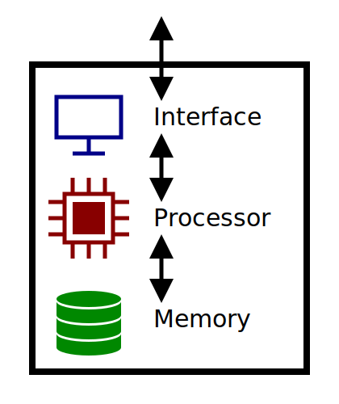

Al giorno d'oggi abbiamo a che fare quotidianamente con l'informatica: cellulari, computer e router Wi-Fi, ma anche antenne telefoniche, server web e persino le comunicazioni satellitari o con sonde extraplanetarie, fanno tutte uso dell'informatica. Queste tecnologie vengono definite TIC:
Esse comprendono tutte quelle tecnologie che permettono di elaborare informazioni o di comunicarle agli altri. Si tratta soprattutto di tecnologie elettroniche, per la loro praticità nella vita di tutti i giorni (immaginatevi dover usare un cellulare che per funzionare deve far girare un volano o che viene attivato solo con il calore..).
Ma l'informatica è molto di più di queste tecnologie, per quanto avanzate, essa è anzitutto una scienza:
Sviscerando questa definizione di informatica possiamo dare un significato a ciascun termine, per ottenere un'idea più chiara.
L'informatica è dunque la scienza che studia come sia possibile memorizzare, elaborare o comunicare informazione senza interventi esterni al sistema. Abbiamo quindi individuato un concetto fondamentale dell'informatica, ovvero il sistema informatico: un'entità che tratta informazioni in modo autonomo. Per ciascuna delle azioni realizzate da un sistema informatico è necessaria una o più componenti specifiche per ciascuna azione: per poter memorizzare le informazioni serve una memoria, per elaborarle un processore, mentre per comunicarle un'interfaccia. Riassumendo il concetto di sistema informatico si ottiene questo schema approssimativo:
All'interno di un sistema informatico e tra sistemi informatici vengono quindi trattate informazioni secondo le logiche in esso operanti. A basso livello, però, ciascuna informazione è trattata al pari di ogni altra: ad esempio se al processore viene detto di fare la differenza tra due numeri, non importa se essi siano quantità di merci in magazzino, prezzi o date. Le informazioni, per essere trattate in questo modo devono perciò essere estratte dal loro contesto, che altrimenti richiederebbe un sistema di elaborazione, memorizzazione o comunicazione dedicato a ciascun contesto considerato. Nei sistemi informatici, infatti, non parliamo compiutamente di informazioni, ma di dati:
Per poter rappresentare un dato è necessario utilizzare simboli, siano essi caratteri di testo, segni grafici, colori o impulsi elettrici. In base alla loro cardinalità, ovvero quanti sono i simboli disponibili, è possibile distinguere rappresentazioni digitali (digit - dall'inglese "cifra") o analogiche:
Questi aggettivi non riguardano solo i metodi di rappresentazione delle informazioni, ma anche gli apparati coinvolti e lo stesso sistema di simboli utilizzati. Si pensi all'alfabeto italiano: per passare dalla 'P' alla 'B' devo disegnare un tratto in più, ma mentre lo disegno creerò caratteri simili alla 'R'; altri caratteri della sequenza non potranno però avere un valore definito all'interno dell'alfabeto, creando quindi un vuoto di simboli tra i tre caratteri coinvolti, che non corrisponderanno ad alcuna lettera italiana: l'alfabeto italiano è quindi digitale.
Affinché l'informazione possa essere trattata in maniera coerente ad ogni esecuzione è importante che essa sia codificata digitalmente; diversamente ogni trattamento potrebbe sottoporre l'informazione ad errore, risultando comunqeu ancora compatibile con la codifica utilizzata. Nel caso specifico l'informatica considera principalmente l'utilizzo della codifica digitale binaria: è molto semplice rappresentare due soli stati di potenziale elettrico, mentre fisicamente più complesso creare sistemi che gestiscano molteplici stati.
Considerando un'informazione complessa è possibile vederla come composta di parti: questo stesso testo è composto di paragrafi, a loro volta realizzati unendo diverse frasi, parole e lettere. Qualunque informazione può essere ridotta in unità sempre più piccole fino ad un certo limite: per poter avere un contenuto un'informazione deve distinguere almeno tra due casi: distinguere meno casi vuol dire non avere informazioni, perchè non consideriamo neanche la possibilità di casi differenti da quello osservato. Questa quantità di informazione è il bit (abbreviazione di binary digit, ovvero cifra binaria):
Sequenziando più bit tra loro è possibile distinguere più casi: con 1 bit è possibile distinguere fino a 2 casi (21), mentre con 2 bit si possono distinguere fino a 4 casi differenti (22). Questo fatto vale in generale per n bit, mediante i quali è possibile scrivere fino a 2n combinazioni. Se è necessario codificare un simbolo all'interno di un certo alfabeto è possibile farlo utilizzando più bit: in particolare userò abbastanza bit da superare, con il rispettivo numero di casi, il numero di simboli dell'alfabeto da codificare. Ad esempio per codificare l'alfabeto italiano (21 caratteri) è possibile usare 5 bit per ogni carattere, arrivando ad avere 32 combinazioni totali (25); quattro bit non sarebbero sufficienti, poiché distinguono solo fino a 16 casi (24).
Tra le sequenze di bit, due dimensioni sono particolarmente rilevanti in informatica, ovvero sequenze di 4 e 8 bit:
Dei due quello in assoluto più conosciuto è il Byte, particolarmente comodo per le codifiche di caratteri: spesso ogni carattere di un testo occupa un Byte di informazione. Il Nibble è meno noto fuori dall'ambito informatico, mentre all'interno è particolarmente rilevante, in particolare per la sua associazione con il sistema di numerazione esadecimale (24 = 16) e quindi la possibilità di scrivere e leggere dati comodamente ragionando ad un livello molto vicino al binario, senza preoccuparsi del fatto che corrispondano a caratteri stampabili o meno.
In informatica si parla spesso di dimensione di una memoria, di un file o di una trasmissione: esse vengono misurate in Byte o in bit, secondo la situazione.
Un'altra grandezza importante in informatica è la frequenza. Diverse componenti dei sistemi informatici sono realizzate mediante fenomeni ripetuti ad intervalli regolari, siano essi fluttuazioni nel campo elettromagnetico, frame sullo schermo o impulsi elettrici all'interno del processore. All'interno di un computer troviamo infatti diversi fenomeni periodici: il clock della CPU, la presentazione a schermo dei frame, le oscillazioni presenti nei sistemi di trasmissione..
Anche la frequenza prevede la sua unità di misura:
Ad esempio una quantità di 4 Hz riferita alla rotazione della ruota di una bicicletta indica quindi che essa compie 4 rotazioni ogni secondo, quindi 8 in due secondi e così via.. Un altro esempio, più informatico: considerando uno schermo da 120 fps si intende uno schermo con un refresh rate di 120 Hz, ovvero capace di far vedere 120 immagini ogni secondo.
È possibile anche combinare queste grandezze misurabili tra di loro o con altre, formandone nuove. Per esempio una trasmissione di informazioni corrisponde al passaggio di una certa quantità di informazioni tra due sistemi informatici in un certo lasso di tempo. Per misurarne la velocità possiamo considerare il rapporto delle due quantità indicate:
Dove indica la velocità di trasmissione, mentre e indicano rispettivamente la quantità di informazione e il tempo necessario all'operazione.
Si ottiene quindi anche la corrispondente unità composta: bit/secondo (b/s), ovvero è possibile misurare quanta informazione viene trasmessa ogni secondo. Grazie a questa unità è possibile quantificare questo aspetto, in relazione a quello dell'informazione e a quello temporale.
Solitamente non viene utilizzata l'unità di misura nel suo formato base, ma si utilizzano multipli (o sottomultipli) in modo da rendere più confortavole la comunicazione della misura. Sulle pubblicità dei computer non si trova infatti "[Clock della] CPU da 3700000000 Hz", ma trovate 3.7 GHz, mentre le memorie sono espresse in GB invece che direttamente in Byte o in bit.
Per ciascuna unità di misura si possono descrivere delle scale di multipli, solitamente considerando multipli secondo un rapporto di 1000 oppure, nel caso dei Byte, di 1024. Questa scelta per il caso del Byte è dovuta alla tradizionale preferenza di utilizzare le potenze di 2 in informatica, in particolare nei sistemi di gestione della memoria.1 I prefissi utilizzati sono i seguenti:
Per convertire tra le varie unità di misura, entro la stessa scala è necessario dividere procedendo verso destra e moltiplicare procedendo verso sinistra, sempre secondo il fattore di conversione indicato: nel primo caso si passa da unità più piccole a più grandi e quindi ce ne sono meno, viceversa ci sono più unità e quindi si moltiplica. Nel caso della doppia scala bit-Byte è possibile anche passare da una all'altra scendendo fino al bit (moltiplicando) e poi risalendo fino al multiplo desiderato (dividendo); non è possibile prendere scorciatoie, a meno di approssimare.
La scelta di 1024 come fattore per i multipli del Byte, pur semplificando la gestione della memoria, rende infatti più difficile effettuare rapidamente la conversione, a meno di mantenere il numero come potenza di 2 o, ovviamente, chiedere direttamente ad un computer.. È possibile però approssimare il fattore moltiplicativo a 1000, e ottenere un risultato vicino a quello reale utilizzando però solo moltiplicazioni o divisioni per 10 (quindi semplici spostamenti della virgola). Tranne il passaggio da bit a Byte o viceversa, per il quale conviene mantenere il rapporto esatto (8), i passaggi tra multipli del Byte assumono fattore approssimato 1000 e si ricava immediatamente che si può effettuare facilmente conversioni approssimate tra i multipli del bit e i corrispondenti multipli del Byte secondo un fattore di 8, in quanto le divisioni e moltiplicazioni per 1000 si elidono a vicenda.
Questo approccio aiuta molto ad approssimare i tempi di trasmissione, poiché spesso le dimensioni dei file sono fornite in multipli del Byte, mentre il rate di trasmissione è indicato in bit/s.